Learn OpenGL - Graphics Programming
Screenshots of programs following "Learn OpenGL"
by Joey de Vries
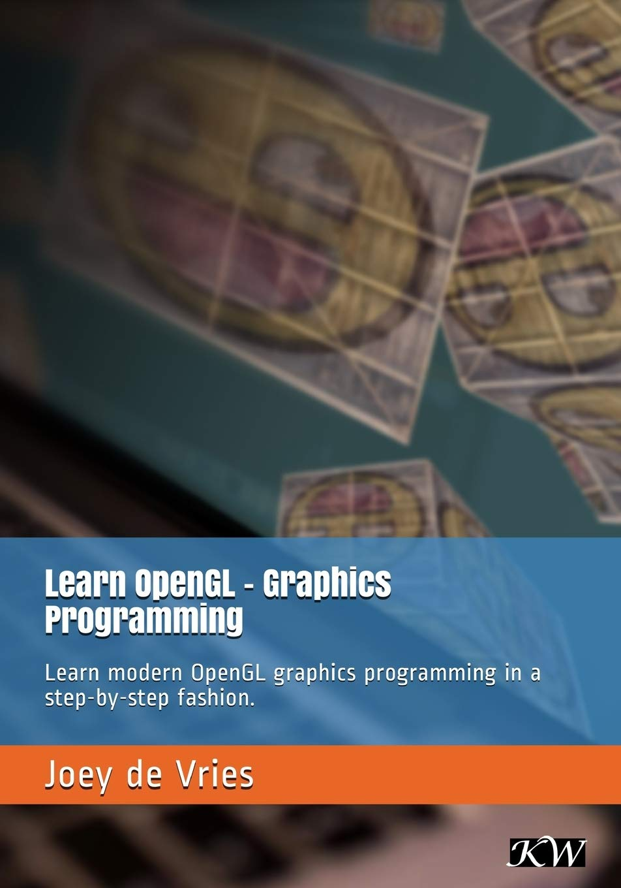
The Code is here:
https://github.com/williamblair/learnopengl
13 - Model Loading
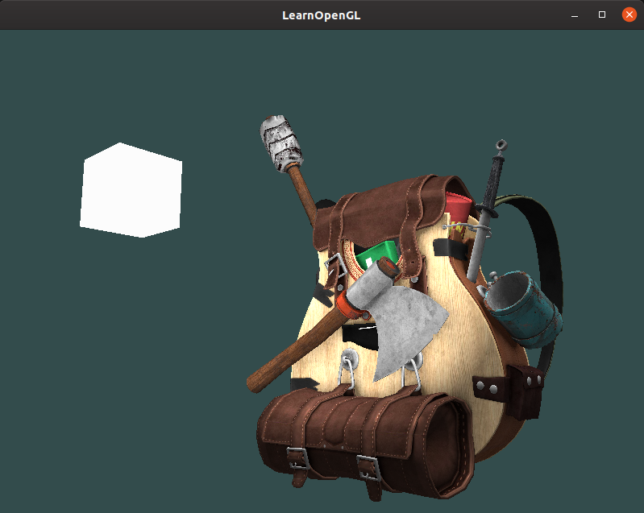
15 - Stencil Buffer
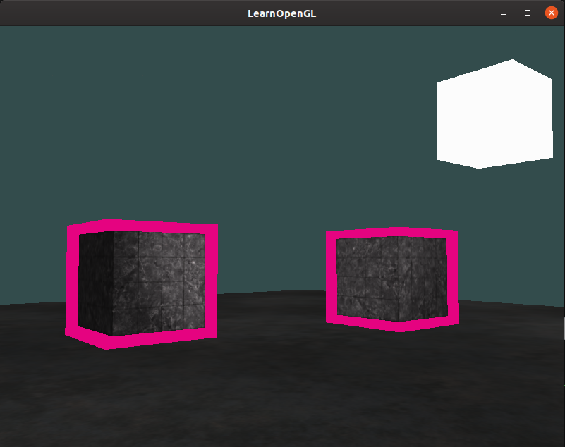
16 - Blending
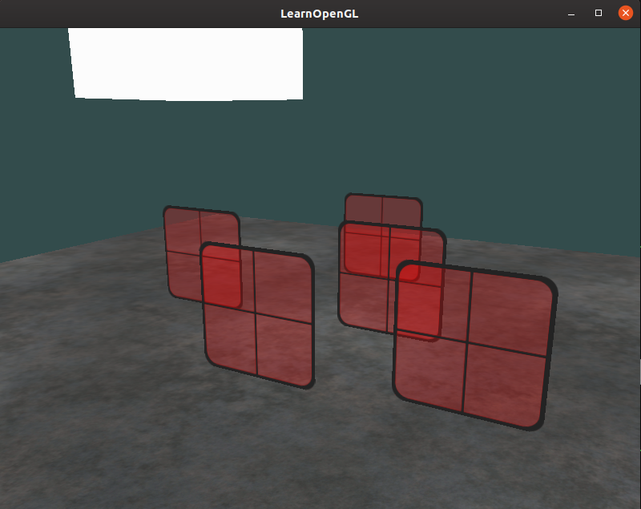
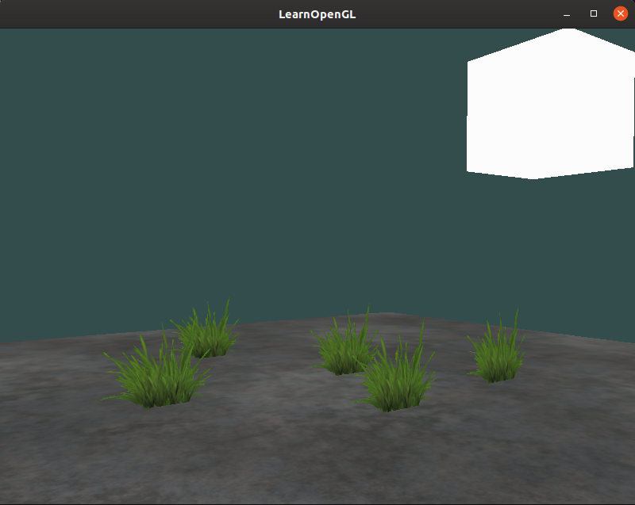
17 - Face Culling
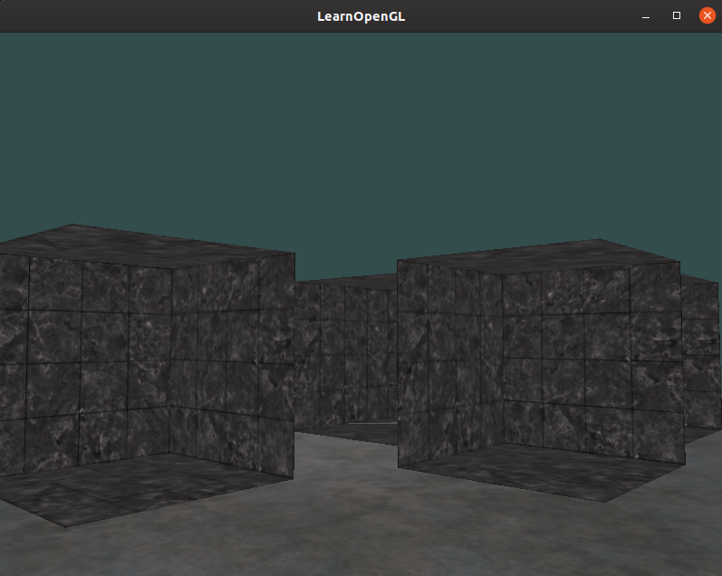
18 - Post Processing/Frame Buffers
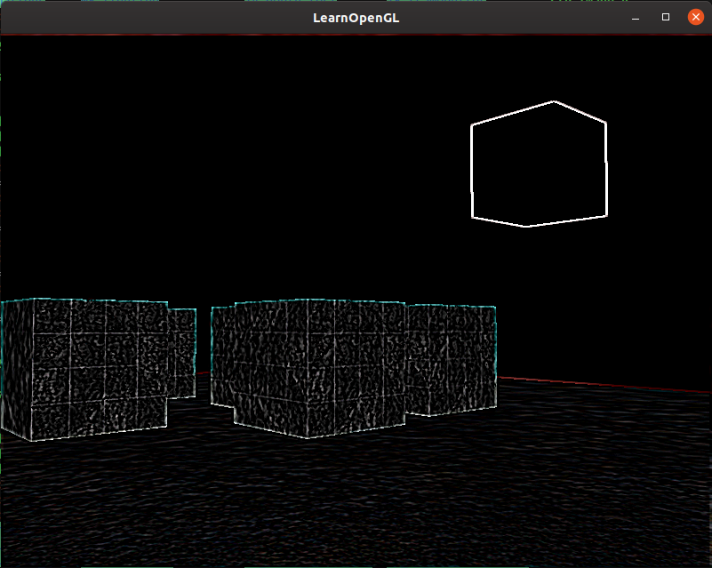
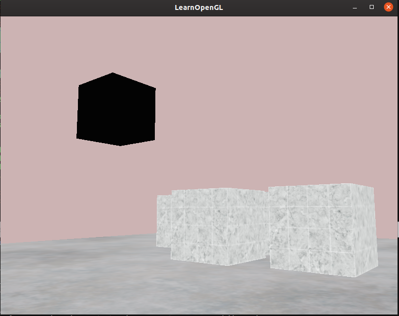
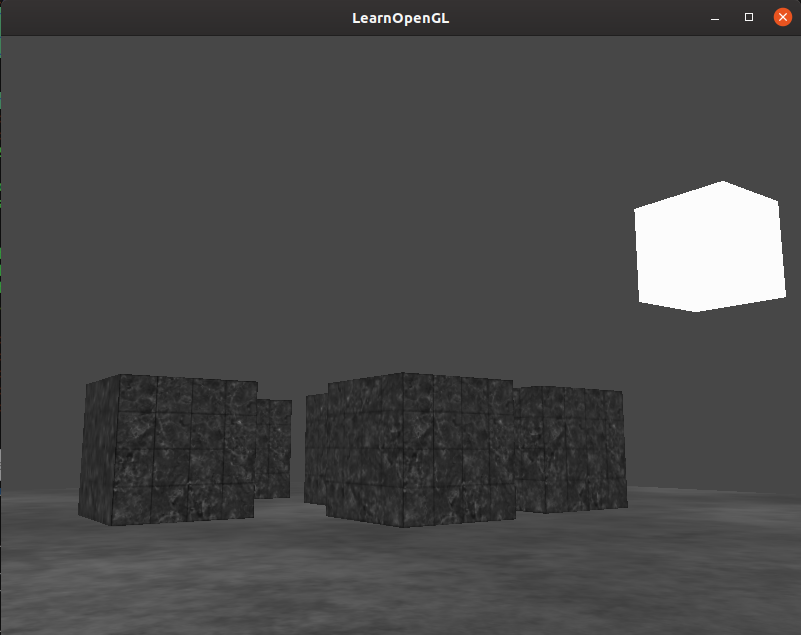
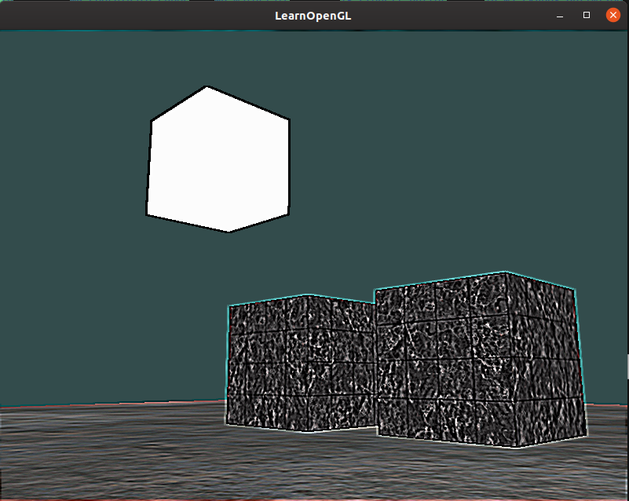
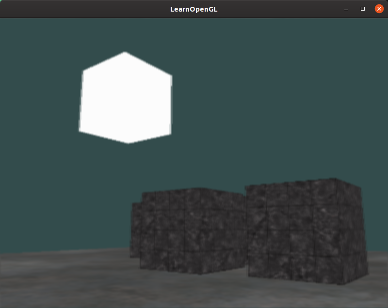
19 - Skybox/Cube Map
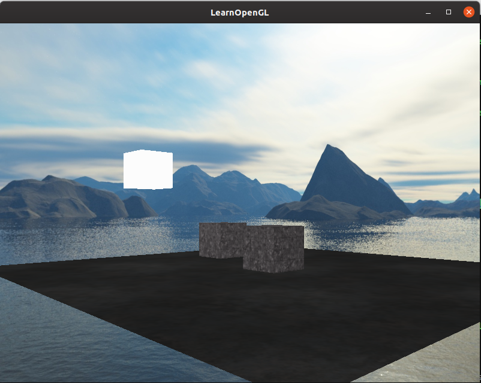
20 - Reflection and Refraction
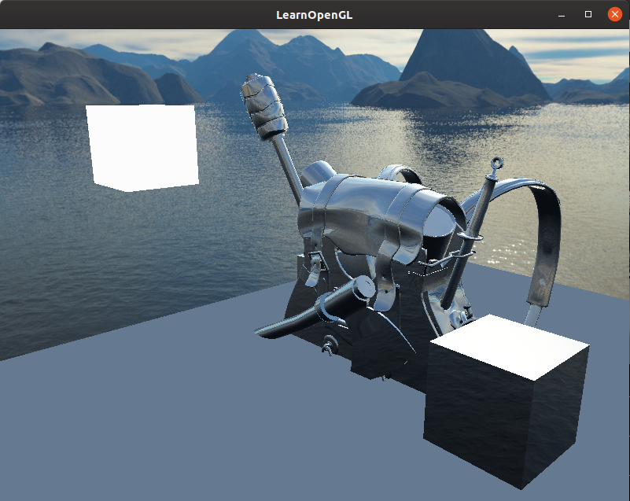
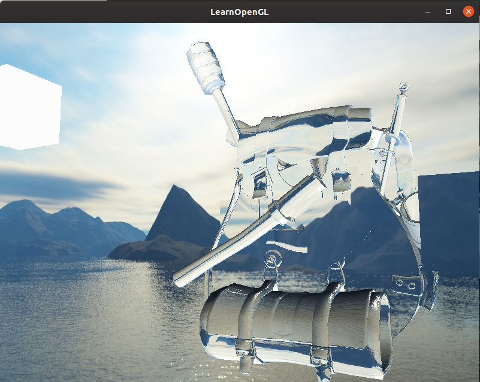
<-- Back to Home